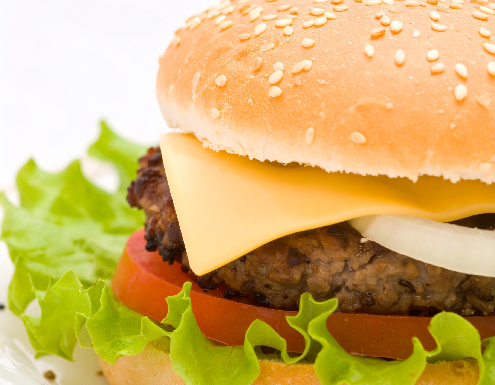

The world's best burger recipe

Nothing beats the taste of a freshly made burger — juicy patties, melted cheese, and crisp vegetables all in a
soft bun.
This recipe will help you make a classic homemade burger that’s just as good, if not better, than your favorite
diner’s.
Ingredients
- 500g ground beef (80% lean)
- 1 tsp salt
- 1/2 tsp black pepper
- 4 burger buns
- 4 slices cheddar cheese
- Lettuce leaves
- Tomato slices
- Onion slices
- Ketchup, mustard, or preferred sauce
Instructions
- Form the ground beef into 4 equal patties. Season both sides with salt and pepper.
- Preheat a grill or skillet over medium-high heat.
- Cook patties for 3–4 minutes per side, or until desired doneness.
- In the last minute of cooking, place a slice of cheese on each patty and cover to melt.
- Lightly toast the burger buns on the grill or in a pan.
- Assemble burgers with lettuce, tomato, onion, patty, and sauce.
- Serve immediately with fries or salad.
back to Homepage